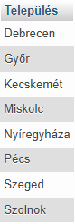
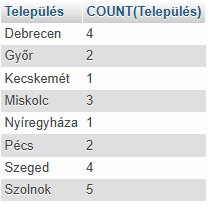
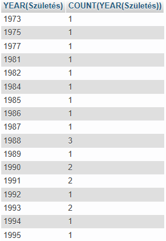

GROUP BY
A GROUP BY utasítás az azonos értékű sorok összesítő sorokba (rekord) csoportosítására szolgál.
A GROUP BY utasítást szinte mindig aggregáló (összesítő) függvényekkel, például COUNT(), MAX(), MIN(), SUM(), AVG() együtt használják , hogy számításokat végezzenek az egyes csoportokon.
Példa:
SELECT Település
FROM dolgozók
GROUP BY Település;


Látható, hogy az eredménytábla a kiválasztott mezőkből áll. Nincs közöttük ismétlődés!
Példa:
SELECT Település,
COUNT(Település)
FROM dolgozók
GROUP BY Település;

Látható, hogy az eredménytábla a kiválasztott mezőkből áll. Nincs közöttük ismétlődés!
Példa:
SELECT
YEAR(Születés), COUNT(YEAR(Születés))
FROM dolgozók
GROUP BY
YEAR(Születés);


Látható, hogy az eredménytábla a kiválasztott mezőkből áll. Nincs közöttük ismétlődés!